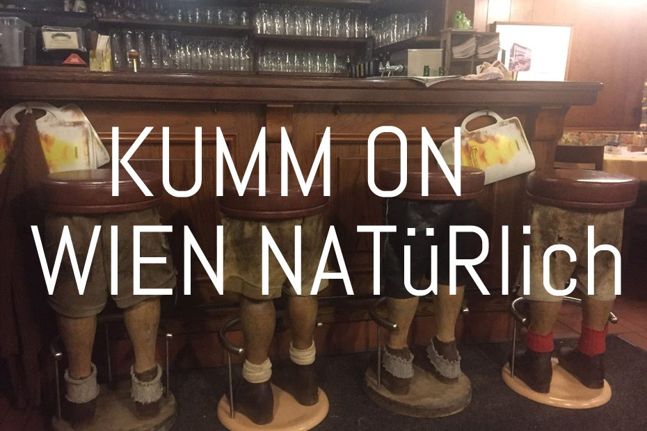

Die Hauptsache
Das Schnitzel
Nomen est omen: Schnitzel ist nicht gleich Schnitzel. Hier ist es groß, günstig und der Grund, warum Gäste aus der ganzen Welt in die Neubaugasse kommen.
Küche
Di bis Sa
10:45 – 21:30 Uhr
Geschlossen
Sonntag, Montag
und Feiertage
Telefon
Die Devise seit Tag eins
Furchtbar gut. Furchtbar viel. Furchtbar preisgünstig.
Günther Schmidt wollte, konnte und machte ein Schnitzel zum Fürchten. Genau diese drei Eigenschaften haben das Lokal berühmt gemacht, und genau daran haben die Töchter nach der Übergabe nichts geändert.
Serviert wird während der gesamten Küchenzeit von Dienstag bis Samstag – von 10:45 Uhr durchgehend bis 21:30 Uhr. Wer mittags kommt, bekommt dieselbe Portion wie am Abend.

Karte & Preise
Die Karte hängt im Schaukasten – und gehört auf die Website
Die aktuelle Speisekarte des Schnitzelwirt hängt im beleuchteten Schaukasten neben dem Eingang. Online gibt es sie bisher nicht: Wer wissen will, was ein Schnitzel kostet, muss anrufen oder vorbeigehen.
Genau das ändert dieser Relaunch. In der fertigen Website steht hier die vollständige Karte mit allen Speisen, Beilagen, Getränken und Tagespreisen – gepflegt vom Lokal selbst, in wenigen Minuten änderbar und auch am Handy lesbar. Weil wir nichts erfinden, zeigt diese Vorschau keine Preise, die nicht vom Betrieb stammen.
Was die Karten-Seite können wird
- Speisen mit Preisengepflegt vom Lokal
- Tagesangebotein Klick
- Allergenhinweiseje Gericht
- Portionsgrößenklein / groß
- Karte als Druckansichtfür den Schaukasten
Häufige Fragen
Wann hat die Küche geöffnet?
Dienstag bis Samstag von 10:45 bis 21:30 Uhr, durchgehend. Sonntag, Montag und an Feiertagen ist geschlossen.
Muss ich reservieren?
Zu den Stoßzeiten ist das Lokal gut besucht. Eine Reservierung ist daher empfehlenswert – telefonisch unter +43 1 523 37 71 oder über das Reservierungsformular dieser Vorschau.
Kann ich mit Karte zahlen?
Der Schnitzelwirt ist als Barzahler-Lokal bekannt. Nehmen Sie sicherheitshalber Bargeld mit; die aktuell akzeptierten Zahlungsmittel erfahren Sie am schnellsten telefonisch.
Gibt es das Schnitzel auch zum Mitnehmen?
Ja. Abholung ist während der Küchenzeiten möglich, Zustellung über Lieferando.at.
Ist das Lokal touristentauglich?
Der Schnitzelwirt ist seit Jahrzehnten Anlaufstelle für Gäste aus aller Welt – viele kommen wegen der Portionsgröße und bleiben wegen des Preises.